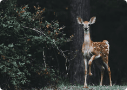
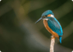

Achievements
March, 2023
Wildlife Photography
Photography
22 March
Rain Deer

Camera: Nikon
Aperture: F/32
Shutter Speed: 2/1
ISO: 100
Perched Blue and Orange Bird

Camera: Nikon
Aperture: F/32
Shutter Speed: 2/1
ISO: 100
This image was taken in Shola Forest is the tropical montane forest found in the upper reaches of India's Western Ghats. This young deer (fawn) let me get pretty close
Comments
No Comments Yet
Perfect Attendance
Award
26 March
Comments

Mohan Kumar Class Mate
Congratulations on receiving the award for perfect attendance! It is a great achievement to attend every class and be present for every lesson, and you should be proud of your dedication and commitment to your education.
Receiving this award is a testament to your hard work and dedication, and is a reflection of your determination to succeed. Your consistent attendance is a valuable asset to your education and will help you to stay on track and make the most of your time in school.
Keep up the good work, and continue to strive for excellence in your studies. Your hard work and dedication are sure to pay off, and you will continue to achieve great things in your academic career. Well done!
Drawing Competition
Drawing
30 March
World Environment Day
Summary
World Environment Day is an annual event that is celebrated on June 5th. It is a day to raise awareness about the importance of protecting the environment and to encourage people to take action to protect the Earth. Related to the environment, such as wildlife, conservation, or sustainable living we are asked to create a drawing that showcases our vision for a healthier, more sustainable world.
Comments

Mehareethaa K V Class Teacher
He has a talent to draw which is highly detailed and realistic. His drawings are able to capture the viewer's attention and imagination, and if it is able to convey a message or emotion effectively.